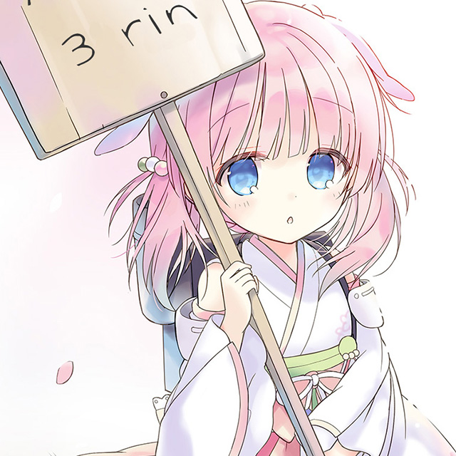

"Prima Doll" là một dự án đa phương tiện được Key khởi động vào tháng 10 năm 2010, mang nội dung dàn trải trên nhiều loại hình truyền thông, bao gồm tiểu thuyết mạng, light novel, manga, anime, CD nhạc và figure. "Encore" là phiên bản tiểu thuyết mạng của tác phẩm, được Key mô tả là một "lite novel" với các câu thoại được lồng tiếng. Tính đến tháng 8 năm 2021, đã có 45 chương truyện được đăng tải thành tám tập sách. Một phần nội dung của "Encore" sau đó được chuyển thể thành kinetic novel.
Test test.


©VISUAL ARTS / Key
Bản dịch tiếng Việt thực hiện bởi Vietnam Key FanClub
Bản dịch tiếng Việt thực hiện bởi Vietnam Key FanClub